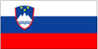

{kind=link}

|
Slovenia |  |
| Introduction Geography People Government Economy Communications Transportation Military Transnational Issues | ||
|
|
||
| Slovenia | Introduction | Top of Page |
| Background: | In 1918 the Slovenes joined the Serbs and Croats in forming a new nation, renamed Yugoslavia in 1929. After World War II, Slovenia became a republic of the renewed Yugoslavia, which though communist, distanced itself from Moscow's rule. Dissatisfied with the exercise of power of the majority Serbs, the Slovenes succeeded in establishing their independence in 1991. Historical ties to Western Europe, a strong economy, and a stable democracy make Slovenia a leading candidate for future membership in the EU and NATO. |
| Slovenia | Geography | Top of Page |
| Location: | Southeastern Europe, eastern Alps bordering the Adriatic Sea, between Austria and Croatia |
| Geographic coordinates: | 46 00 N, 15 00 E |
| Map references: | Europe |
| Area: |
total:
20,253 sq km
land: 20,253 sq km water: 0 sq km |
| Area - comparative: | slightly smaller than New Jersey |
| Land boundaries: |
total:
1,165 km
border countries: Austria 330 km, Croatia 501 km, Italy 232 km, Hungary 102 km |
| Coastline: | 46.6 km |
| Maritime claims: | NA |
| Climate: | Mediterranean climate on the coast, continental climate with mild to hot summers and cold winters in the plateaus and valleys to the east |
| Terrain: | a short coastal strip on the Adriatic, an alpine mountain region adjacent to Italy and Austria, mixed mountain and valleys with numerous rivers to the east |
| Elevation extremes: |
lowest point:
Adriatic Sea 0 m
highest point: Triglav 2,864 m |
| Natural resources: | lignite coal, lead, zinc, mercury, uranium, silver, hydropower |
| Land use: |
arable land:
12%
permanent crops: 3% permanent pastures: 24% forests and woodland: 54% other: 7% (1996 est.) |
| Irrigated land: | 20 sq km (1993 est.) |
| Natural hazards: | flooding and earthquakes |
| Environment - current issues: | Sava River polluted with domestic and industrial waste; pollution of coastal waters with heavy metals and toxic chemicals; forest damage near Koper from air pollution (originating at metallurgical and chemical plants) and resulting acid rain |
| Environment - international agreements: |
party to:
Air Pollution, Air Pollution-Sulphur 94, Biodiversity, Climate Change, Endangered Species, Hazardous Wastes, Law of the Sea, Marine Dumping, Nuclear Test Ban, Ozone Layer Protection, Ship Pollution, Wetlands
signed, but not ratified: Air Pollution-Persistent Organic Pollutants, Climate Change-Kyoto Protocol |
| Slovenia | People | Top of Page |
| Population: | 1,930,132 (July 2001 est.) |
| Age structure: |
0-14 years:
16.09% (male 159,428; female 151,134)
15-64 years: 69.61% (male 681,333; female 662,170) 65 years and over: 14.3% (male 101,354; female 174,713) (2001 est.) |
| Population growth rate: | 0.14% (2001 est.) |
| Birth rate: | 9.32 births/1,000 population (2001 est.) |
| Death rate: | 9.98 deaths/1,000 population (2001 est.) |
| Net migration rate: | 2.11 migrant(s)/1,000 population (2001 est.) |
| Sex ratio: |
at birth:
1.06 male(s)/female
under 15 years: 1.05 male(s)/female 15-64 years: 1.03 male(s)/female 65 years and over: 0.58 male(s)/female total population: 0.95 male(s)/female (2001 est.) |
| Infant mortality rate: | 4.51 deaths/1,000 live births (2001 est.) |
| Life expectancy at birth: |
total population:
75.08 years
male: 71.2 years female: 79.17 years (2001 est.) |
| Total fertility rate: | 1.28 children born/woman (2001 est.) |
| HIV/AIDS - adult prevalence rate: | 0.02% (1999 est.) |
| HIV/AIDS - people living with HIV/AIDS: | 200 (1999 est.) |
| HIV/AIDS - deaths: | less than 100 (1999 est.) |
| Nationality: |
noun:
Slovene(s)
adjective: Slovenian |
| Ethnic groups: | Slovene 88%, Croat 3%, Serb 2%, Bosniak 1%, Yugoslav 0.6%, Hungarian 0.4%, other 5% (1991) |
| Religions: | Roman Catholic 68.8%, Uniate Catholic 2%, Lutheran 1%, Muslim 1%, atheist 4.3%, other 22.9% |
| Languages: | Slovenian 91%, Serbo-Croatian 6%, other 3% |
| Literacy: |
definition:
NA
total population: 99% male: NA% female: NA% |
| Slovenia | Government | Top of Page |
| Country name: |
conventional long form:
Republic of Slovenia
conventional short form: Slovenia local long form: Republika Slovenija local short form: Slovenija |
| Government type: | parliamentary democratic republic |
| Capital: | Ljubljana |
| Administrative divisions: |
136 municipalities (obcine, singular - obcina) and 11 urban municipalities* (mestne obcine , singular - mestna obcina ) Ajdovscina, Beltinci, Bled, Bohinj, Borovnica, Bovec, Brda, Brezice, Brezovica, Cankova-Tisina, Celje*, Cerklje na Gorenjskem, Cerknica, Cerkno, Crensovci, Crna na Koroskem, Crnomelj, Destrnik-Trnovska Vas, Divaca, Dobrepolje, Dobrova-Horjul-Polhov Gradec, Dol pri Ljubljani, Domzale, Dornava, Dravograd, Duplek, Gorenja Vas-Poljane, Gorisnica, Gornja Radgona, Gornji Grad, Gornji Petrovci, Grosuplje, Hodos Salovci, Hrastnik, Hrpelje-Kozina, Idrija, Ig, Ilirska Bistrica, Ivancna Gorica, Izola, Jesenice, Jursinci, Kamnik, Kanal, Kidricevo, Kobarid, Kobilje, Kocevje, Komen, Koper*, Kozje, Kranj*, Kranjska Gora, Krsko, Kungota, Kuzma, Lasko, Lenart, Lendava, Litija, Ljubljana*, Ljubno, Ljutomer, Logatec, Loska Dolina, Loski Potok, Luce, Lukovica, Majsperk, Maribor*, Medvode, Menges, Metlika, Mezica, Miren-Kostanjevica, Mislinja, Moravce, Moravske Toplice, Mozirje, Murska Sobota*, Muta, Naklo, Nazarje, Nova Gorica*, Novo Mesto*, Odranci, Ormoz, Osilnica, Pesnica, Piran, Pivka, Podcetrtek, Podvelka-Ribnica, Postojna, Preddvor, Ptuj*, Puconci, Race-Fram, Radece, Radenci, Radlje ob Dravi, Radovljica, Ravne-Prevalje, Ribnica, Rogasevci, Rogaska Slatina, Rogatec, Ruse, Semic, Sencur, Sentilj, Sentjernej, Sentjur pri Celju, Sevnica, Sezana, Skocjan, Skofja Loka, Skofljica, Slovenj Gradec*, Slovenska Bistrica, Slovenske Konjice, Smarje pri Jelsah, Smartno ob Paki, Sostanj, Starse, Store, Sveti Jurij, Tolmin, Trbovlje, Trebnje, Trzic, Turnisce, Velenje*, Velike Lasce, Videm, Vipava, Vitanje, Vodice, Vojnik, Vrhnika, Vuzenica, Zagorje ob Savi, Zalec, Zavrc, Zelezniki, Ziri, Zrece
note: there may be 45 more municipalities |
| Independence: | 25 June 1991 (from Yugoslavia) |
| National holiday: | Independence Day/Statehood Day, 25 June (1991) |
| Constitution: | adopted 23 December 1991, effective 23 December 1991 |
| Legal system: | based on civil law system |
| Suffrage: | 18 years of age; universal (16 years of age, if employed) |
| Executive branch: |
chief of state:
President Milan KUCAN (since 22 April 1990)
head of government: Prime Minister Janez DRNOVSEK (since 15 October 2000); cabinet: Council of Ministers nominated by the prime minister and elected by the National Assembly elections: president elected by popular vote for a five-year term; election last held 24 November 1997 (next to be held NA 2002); following National Assembly elections, the leader of the majority party or the leader of a majority coalition is usually nominated to become prime minister by the president and elected by the National Assembly; election last held 15 October 2000 (next to be held NA October 2004) election results: Milan KUCAN elected president; percent of vote - Milan KUCAN 56.3%, Janez PODOBNIK 18%; Janez DRNOVSEK elected prime minister; percent of National Assembly vote - NA |
| Legislative branch: |
unicameral National Assembly or Drzavni Zbor (90 seats, 40 are directly elected and 50 are selected on a proportional basis; note - the numbers of directly elected and proportionally elected seats varies with each election; members are elected by popular vote to serve four-year terms)
elections: National Assembly - last held 15 October 2000 (next to be held NA October 2004) election results: percent of vote by party - LDS 36%, SDS 16%, ZLSD 12%, SLS/SKD 10%, NSI 9%, SMS 4%, SNS 4%, DeSUS 5%, other 4%; seats by party - LDS 34, SDS 14, ZLDS 11, SLS/SKD 9, NSI 8, SMS 4, SNS 4, DeSUS 4, other 2 note: the National Council or Drzavni Svet is an advisory body with limited legislative powers; it may propose laws and ask to review any National Assembly decisions; in the election of NA November 1997, 40 members were elected to represent local, professional, and socioeconomic interests (next election to be held in the fall of 2002) |
| Judicial branch: | Supreme Court (judges are elected by the National Assembly on the recommendation of the Judicial Council); Constitutional Court (judges elected for nine-year terms by the National Assembly and nominated by the president) |
| Political parties and leaders: | Democratic Party of Retired (Persons) of Slovenia or DeSUS [Janko KUSAR]; Liberal Democratic or LDS [Janez DRNOVSEK, chairman]; New Slovenia or NSI [Andrej BAJUK, chairman]; Slovene National Party or SNS [Zmago JELINCIC, chairman]; Slovene People's Party or SLS (Slovenian People's Party or SLS and Slovenian Christian Democrats or SKD merged in April 2000) [Franc ZAGOZEN, chairman]; Slovene Youth Party or SMS [leader NA]; Social Democratic Party of Slovenia or SDS [Janez JANSA, chairman]; United List of Social Democrats (former Communists and allies) or ZLSD [Borut PAHOR, chairman] |
| Political pressure groups and leaders: | NA |
| International organization participation: | ABEDA, ACCT (observer), BIS, CCC, CE, CEI, EAPC, EBRD, ECE, EU (applicant), FAO, IADB, IAEA, IBRD, ICAO, ICRM, IDA, IFC, IFRCS, ILO, IMF, IMO, Intelsat (nonsignatory user), Interpol, IOC, IOM, ISO, ITU, NAM (guest), NSG, OPCW, OSCE, PFP, UN, UNCTAD, UNESCO, UNFICYP, UNIDO, UNTAET, UNTSO, UPU, WEU (associate partner), WHO, WIPO, WMO, WToO, WTrO |
| Diplomatic representation in the US: |
chief of mission:
Ambassador Davorin KRACUN
chancery: 1525 New Hampshire Avenue NW, Washington, DC 20036 telephone: [1] (202) 667-5363 FAX: [1] (202) 667-4563 consulate(s) general: New York consulate(s): Cleveland |
| Diplomatic representation from the US: |
chief of mission:
Ambassador Nancy ELY-RAPHEL
embassy: Presernova 31, SI-1000 Ljubljana mailing address: P. O. Box 254, Presernova 31, 1000 Ljubljana; American Embassy Ljubljana, Department of State, Washington, DC 20521-7140 telephone: [386] (01) 200-5500 FAX: [386] (01) 200-5555 |
| Flag description: | three equal horizontal bands of white (top), blue, and red, with the Slovenian seal (a shield with the image of Triglav, Slovenia's highest peak, in white against a blue background at the center; beneath it are two wavy blue lines depicting seas and rivers, and above it are three six-pointed stars arranged in an inverted triangle which are taken from the coat of arms of the Counts of Celje, the great Slovene dynastic house of the late 14th and early 15th centuries); the seal is located in the upper hoist side of the flag centered in the white and blue bands |
| Slovenia | Economy | Top of Page |
| Economy - overview: | Although Slovenia enjoys one of the highest GDPs per capita among the transition economies of Central Europe, it needs to speed up the privatization process and the dismantling of restrictions on foreign investment. About 45% of the economy remains in state hands, and the level of foreign direct investment inflows as a percent of GDP is the lowest in the region. Analysts are predicting between 4.0% and 4.2% growth for 2001. Export growth is expected to slow in 2001 and 2002 as EU markets soften. Inflation rose from 6.1% to 8.9% in 2000 and remains a matter of concern. |
| GDP: | purchasing power parity - $22.9 billion (2000 est.) |
| GDP - real growth rate: | 4.5% (2000 est.) |
| GDP - per capita: | purchasing power parity - $12,000 (2000 est.) |
| GDP - composition by sector: |
agriculture:
4%
industry: 35% services: 61% (1999 est.) |
| Population below poverty line: | NA% |
| Household income or consumption by percentage share: |
lowest 10%:
3.2%
highest 10%: 20.7% (1995) |
| Inflation rate (consumer prices): | 8.9% (2000 est.) |
| Labor force: | 857,400 |
| Labor force - by occupation: | agriculture NA%, industry NA%, services NA% |
| Unemployment rate: | 7.1% (1997 est.) |
| Budget: |
revenues:
$8.11 billion
expenditures: $8.32 billion, including capital expenditures of $NA (1997 est.) |
| Industries: | ferrous metallurgy and rolling mill products, aluminum reduction and rolled products, lead and zinc smelting, electronics (including military electronics), trucks, electric power equipment, wood products, textiles, chemicals, machine tools |
| Industrial production growth rate: | 6.2% (2000) |
| Electricity - production: | 12.451 billion kWh (1999) |
| Electricity - production by source: |
fossil fuel:
34.44%
hydro: 29.58% nuclear: 35.98% other: 0% (1999) |
| Electricity - consumption: | 10.024 billion kWh (1999) |
| Electricity - exports: | 2.2 billion kWh (1999) |
| Electricity - imports: | 645 million kWh (1999) |
| Agriculture - products: | potatoes, hops, wheat, sugar beets, corn, grapes; cattle, sheep, poultry |
| Exports: | $8.9 billion (f.o.b., 2000) |
| Exports - commodities: | manufactured goods, machinery and transport equipment, chemicals, food |
| Exports - partners: | Germany 31%, Italy 14%, Croatia 8%, Austria 7%, France 6% (1999) |
| Imports: | $9.9 billion (f.o.b., 2000) |
| Imports - commodities: | machinery and transport equipment, manufactured goods, chemicals, fuels and lubricants, food |
| Imports - partners: | Germany 21%, Italy 17%, France 11%, Austria 8%, Croatia 4%, Hungary, Russia (1999) |
| Debt - external: | $6.2 billion (2000) |
| Economic aid - recipient: | ODA, $5 million (1993) |
| Currency: | tolar (SIT) |
| Currency code: | SIT |
| Exchange rates: | tolars per US dollar - 225.93 (January 2001), 222.66 (2000), 181.77 (1999), 166.13 (1998), 159.69 (1997), 135.36 (1996) |
| Fiscal year: | calendar year |
| Slovenia | Communications | Top of Page |
| Telephones - main lines in use: | 722,000 (1997) |
| Telephones - mobile cellular: | 1 million (2000) |
| Telephone system: |
general assessment:
NA
domestic: 100% digital (2000) international: NA |
| Radio broadcast stations: | AM 17, FM 160, shortwave 0 (1998) |
| Radios: | 805,000 (1997) |
| Television broadcast stations: | 48 (2001) |
| Televisions: | 710,000 (1997) |
| Internet country code: | .si |
| Internet Service Providers (ISPs): | 11 (2000) |
| Internet users: | 460,000 (1999) |
| Slovenia | Transportation | Top of Page |
| Railways: |
total:
1,201 km
standard gauge: 1,201 km 1.435-m gauge (489 km electrified) (1999) |
| Highways: |
total:
19,586 km
paved: 17,745 km (including 249 km of expressways) unpaved: 1,841 km (1998 est.) |
| Waterways: | NA |
| Pipelines: | crude oil 290 km; natural gas 305 km |
| Ports and harbors: | Izola, Koper, Piran |
| Airports: | 14 (2000 est.) |
| Airports - with paved runways: |
total:
6
over 3,047 m: 1 2,438 to 3,047 m: 1 1,524 to 2,437 m: 1 914 to 1,523 m: 2 under 914 m: 1 (2000 est.) |
| Airports - with unpaved runways: |
total:
8
1,524 to 2,437 m: 2 914 to 1,523 m: 2 under 914 m: 4 (2000 est.) |
| Slovenia | Military | Top of Page |
| Military branches: | Slovenian Army (includes Air and Naval Forces) |
| Military manpower - military age: | 19 years of age |
| Military manpower - availability: | males age 15-49: 523,336 (2001 est.) |
| Military manpower - fit for military service: | males age 15-49: 416,237 (2001 est.) |
| Military manpower - reaching military age annually: | males: 14,513 (2001 est.) |
| Military expenditures - dollar figure: | $370 million (FY00) |
| Military expenditures - percent of GDP: | 1.7% (FY00) |
| Slovenia | Transnational Issues | Top of Page |
| Disputes - international: | progress with Croatia on discussions of adjustments to land boundary, but problems remain in defining maritime boundary in Gulf of Piran; Austria has minor dispute with Slovenia over nuclear power plants and post-World War II treatment of German-speaking minorities |
| Illicit drugs: | minor transit point for cocaine and Southwest Asian heroin bound for Western Europe, and for precursor chemicals |